Анализ осанки и движения с разбором специалиста
Специалист объяснит, что показывают измерения, и поможет выбрать следующие шаги с учётом ваших целей и привычек.

С чем к нам приходят
- Увидели себя на фото с созвона и не узнали свою осанку
- Весь день за компьютером, к вечеру тянет шею и плечи
- Держите спину, а через час снова сутулитесь
- Ходите на йогу или в зал, а осанка та же
- Хочется понимать своё тело, а не гадать
Что показывает анализ
Измерения помогают описать положение головы, плеч, таза и других частей тела. Специалист сопоставляет наблюдения с тем, как вы обычно сидите, работаете или тренируетесь. Снимок показывает положение тела в момент съёмки.
Как проходит разбор
- Подготовка. После заявки специалист уточняет, какие материалы нужны для разбора.
- Измерение. По снимкам можно отметить опорные точки и измерить углы, например положение головы и плеч.
- Разбор. Специалист объясняет, что показывают измерения и как их читать.
- Дальнейшие шаги. Обсуждаете, на что обратить внимание с учётом ваших целей.
Что вы получите
Объяснение измерений простым языком и понимание, что можно сделать дальше. Состав материалов специалист уточнит при записи.
Онлайн-формат и стоимость
Онлайн-разбор
Специалист объяснит результаты измерений и обсудит с вами дальнейшие шаги.
Границы метода
Анализ помогает описать положение тела и обсудить особенности движения. По снимкам нельзя установить причину боли или оценить движения в обычной жизни. Разбор не заменяет консультацию врача.
Частые вопросы
Нужно ли, если ничего не болит?
Да. Разбор подходит тем, кто хочет лучше понять положение тела и обсудить привычки движения.
Что нужно подготовить для онлайн-разбора?
После заявки специалист объяснит, какие материалы и ракурсы нужны. Условия работы со снимками описаны в согласии на обработку фото.
Что делает специалист?
Объясняет результаты измерений с учётом ваших целей и привычек и помогает определить дальнейшие шаги.
Что можно увидеть по фото?
На двух снимках можно оценить положение тела в момент съёмки. Система отмечает точки и считает углы. Специалист объясняет измерения с учётом ваших привычек.
Что делать после разбора?
Можно продолжить со специалистом или вернуться через несколько месяцев и сравнить замеры.
Записаться на анализ
Онлайн-разбор стоит 2 000 ₽. Оставьте имя и телефон или Telegram, чтобы команда связалась с вами и уточнила детали записи.
После разбора
Можно продолжить со специалистом или вернуться через несколько месяцев и сравнить замеры. Анализ один из продуктов Атлетикс Корп.